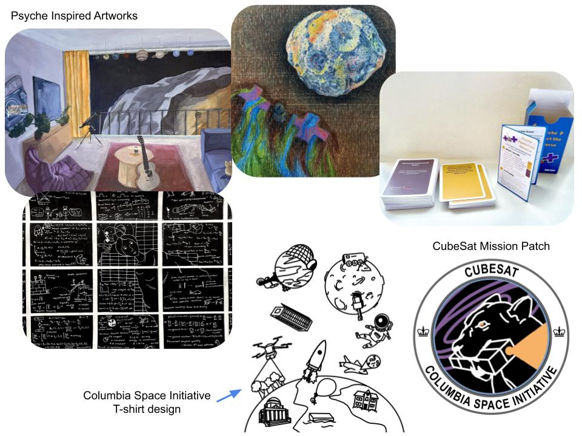

Engineering Inspired Art
I enjoy exploring the intersection between art and engineering. As a Psyche Inspired Intern, I created four art pieces based on NASA's Psyche Mission, intended for outreach and educational materials shared on the mission's website and Instagram. Each piece was reviewed and approved by the Psyche Mission PI to ensure it was both scientifically accurate and engaging.
First piece: A marker-on-paper chalkboard drawing representing the first-principles math and science behind the Psyche mission, highlighting the underlying engineering and physics concepts.
Second piece: An acrylic painting depicting a typical living room as if it were aboard the spacecraft visiting 16 Psyche. This piece emphasizes how everyone, not just scientists and engineers, is part of the discovery process.
Third piece: A colored pencil drawing on a wooden panel showing a spacecraft digging toward Earth's core, reflecting the metal composition similar to the asteroid 16 Psyche. This was my first time exploring colored pencil on wood as a medium.
Fourth piece: A card game designed using an online manufacturer, inspired by fantastical scenarios Psyche might encounter on its six-year journey. The PI specifically requested additional copies for her team.
Beyond Psyche-inspired art, I applied my creative skills to represent projects I am part of. I designed t-shirts for the Columbia Space Initiative club, iterating through sketches with feedback from club administrators to accurately represent all 13 missions in the club. I also designed the mission patch for the 6U CubeSat LIONESS, coordinating with the team to incorporate feedback and match the color theme of our grant proposal. Both the t-shirts and patch were distributed to club members and guest speakers.
← Back to Projects